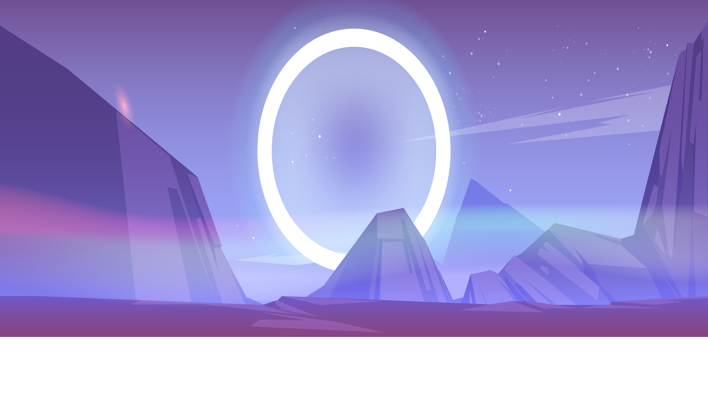
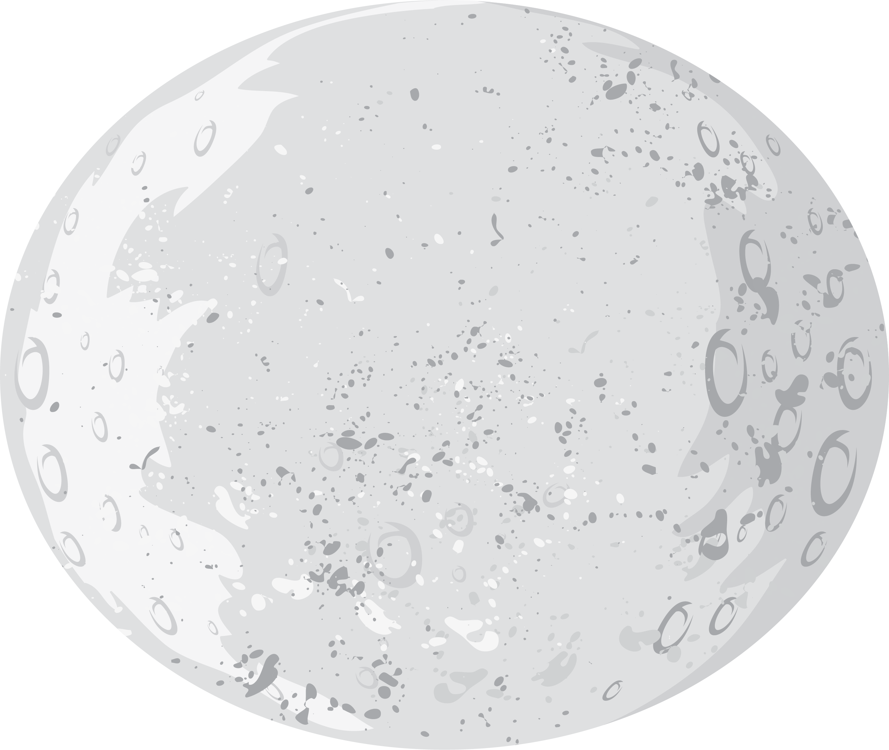
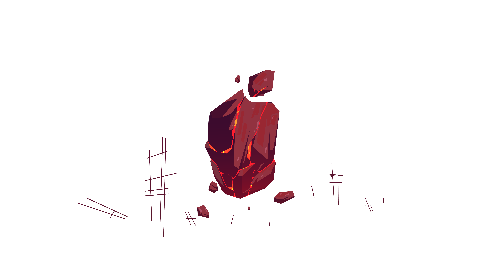
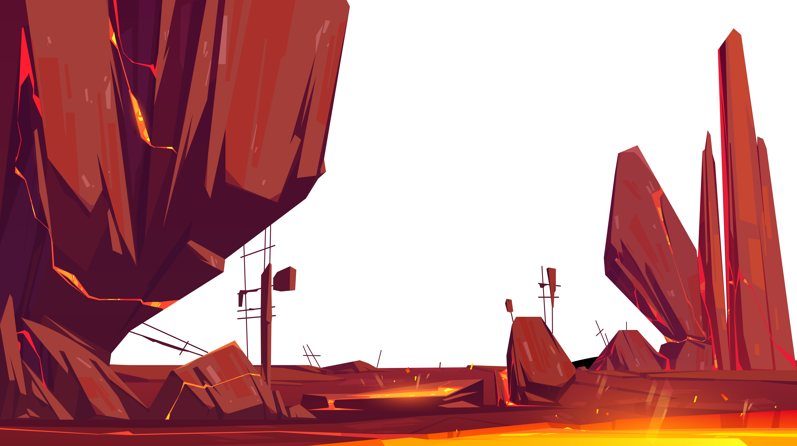

Mercury
Mercury is the first of the four terrestrial planets. This means it is a planet made mostly of rock. The planets closest to the Sun—Venus, Earth, and Mars—are the other three. Mercury is the smallest of the terrestrial planets. It has an iron core that accounts for about 3/4 of its diameter. Most of the rest of the planet is made up of a rocky crust.
Venus
Venus is the second planet from the Sun and the sixth-largest. Together with Mercury, they are the only planets without a satellite, even though Mercury is closer to the sun, Venus is the hottest planet.
Earth
Earth is the third planet from the Sun and the fifth largest planet in the Solar System with the highest density. It is currently the only known location where life is present.
Mars
Mars is the fourth planet from the Sun and the second-smallest planet with a thin atmosphere, having the surface features reminiscent both of the impact craters of the Moon, and the valleys, deserts and polar ice caps of Earth.
Jupiter
Jupiter is the fifth planet from the Sun and the largest planet of the Solar System. It is the oldest planet of the Solar System thus it was the first to take shape out of the remains of the solar nebula.
Saturn
Saturn is the sixth planet from the Sun, with the largest planetary rings in the Solar System. It is the second-largest planet after Jupiter, and recently, with many other moons being discovered, it surpassed the number of Jupiter’s moons.
Uranus
Uranus is the seventh planet discovered in the Solar System that also led to the discovery of the last planet, Neptune they are both referred to as ice giants.
Neptune
Neptune is the fourth largest and the farthest planet of the Solar System with the most powerful wind speeds out of all the planets. It is the smallest of the gas giants.